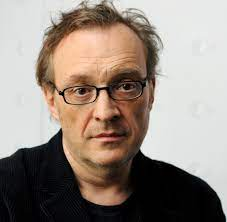

Kindheit und Jugendsünden
- 1962 Josef Hader wird in Waldhausen, Oberösterreich, geboren.
- 1968 Volksschule Nöchling. Wegen wiederholtem Lügen richten die Lehrer mehrere Briefe an seine Eltern. Die Unterschrift lässt Hader von seiner Großmutter fälschen. Ministrant.
- 1972 Bischöfliches Knabenseminar in Melk. Stiftsgymnasium. Chorsänger, Organist, Bettnässer.
- 1980 Erste Kabarettversuche an der Schule. Kritische Nummern über Lehrer vor Schülern. Riesenerfolg. Das Wesen von Kabarett verstanden.
- 1990 „Deutscher Kleinkunstpreis“ für sein Programm „Bunter Abend“
- 1991 Gemeinsam mit Alfred Dorfer schreibt er das satirische Stück „Indien“, das
- 1993 mit Paul Harather als Regisseur verfilmt wird.
